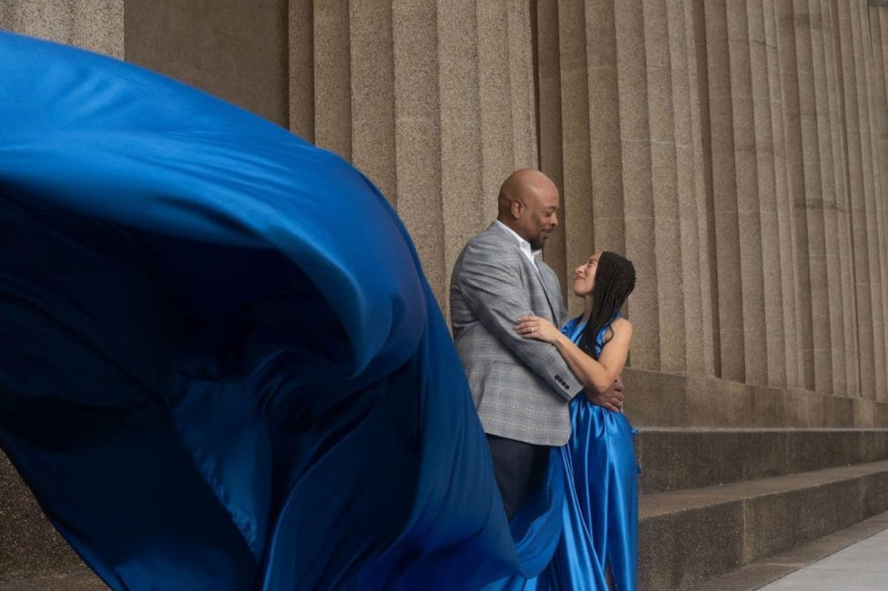

Marketing strategy
Nashville Flying Dress Campaign
A set of four marketing strategies designed to grow Nashville Flying Dress’s reach. I conducted market research on the brand’s audience and trends, then shaped the findings into a clear visual report in Canva.
Each strategy focused on improving visibility and engagement across different platforms.
